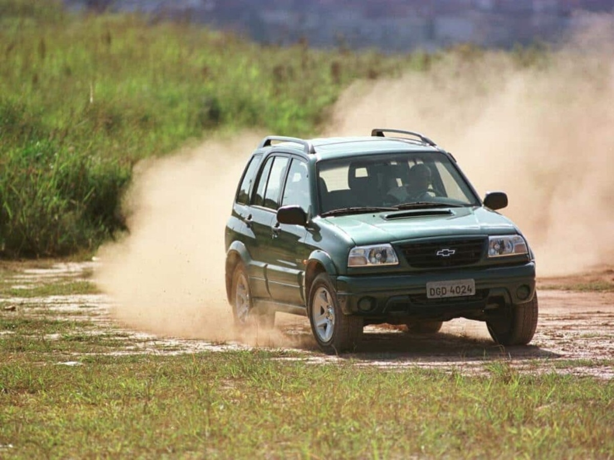
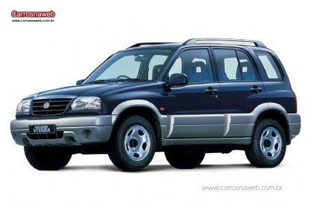

O GUIA DEFINITIVO DOS GÊMEOS 4X4
Chevrolet Tracker 2.0 16V & Suzuki Grand Vitara SQ420. Informações organizadas por assunto: simulador visual de pneus, peças compatíveis, lift e compras seguras.
Navegue por Assunto
Sem poluição visual: clique na categoria desejada para acessar conteúdos dedicados.
Simulador Visual de Pneus & Lift
Veja o visual da Tracker ou Grand Vitara em tempo real ao selecionar lift de 1 polegada, 2 polegadas e medidas de pneus (225/70/16, 225/75, etc.).
Peças Compatíveis & Nacionais
Bomba de combustível do Gol MI, velas NGK, sonda universal, pastilhas Cobreq, amortecedores de Suprema e dezenas de peças paralelas de qualidade.
Receita do Lift de 2" (50mm)
Tudo sobre erguer a suspensão para rodar com pneus 225/75 R16: medidas de calços, molas de Santana, amortecedores de Omega Suprema e cambagem.
Bomba do 4x4 & Roda Livre AVM
Como resolver a luz 4WD piscando no painel: realocação da bombinha de vácuo para o cofre do motor ou instalação de cubos de roda livre manual AVM 438.
Onde Comprar & Lojas Confiáveis
Diretório de fornecedores testados: Suzucar, Tração Offroad, Alternativa 4x4, links diretos no Mercado Livre e dicas de compras no AliExpress.
Garagem & Dúvidas Frequentes
Fotos de viaturas dos proprietários, setups de expedição, pneus utilizados e respostas claras para as dúvidas mais recorrentes da comunidade.
Irmãos Gêmeos: O Que Muda e O Que é Igual?
Mecanicamente 100% idênticos. As diferenças resumem-se à roupagem externa e detalhes de acabamento.

Chevrolet Tracker 2.0 16VA Versão Brasileira / Mercosul
Comercializada pela rede Chevrolet entre 2001 e 2009. Montada na Argentina na planta GM/Suzuki com mecânica 100% japonesa genuína (motor Suzuki J20A DOHC de 128 cv).
- ✓ Grade dianteira com emblema da gravata Chevrolet
- ✓ Faróis de milha redondos integrados no para-choque
- ✓ Câmbio manual de 5 marchas (ou automático em lotes específicos)

Suzuki Grand Vitara SQ420O Projeto Original Suzuki (Japão)
A primeira geração mundial (SQ420 - 1998 a 2005). Carroceria com pintura em dois tons (saias cinzas), chassi com longarinas e tração integral temporária com reduzida.
- ✓ Grade dianteira cromada com o 'S' clássico da Suzuki
- ✓ Molduras plásticas laterais largas de proteção
- ✓ Todas as peças de suspensão e motor são 100% intercambiáveis